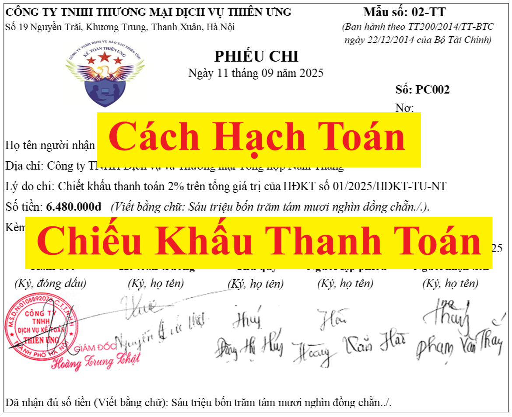

Chiết khấu thanh toán có phải xuất hóa đơn không? Hạch toán như thế nào? Bài viết này Công ty tư vấn Minh Phúc xin hướng dẫn cách hạch toán chiết khấu thanh toán với cả 2 trường hợp là chiết khấu cho khách hàng và được hưởng. Cách hạch toán chiết khấu thanh toán theo Thông tư 133 và 200.
Chiết khấu thanh toán: Là khoản tiền người bán giảm trừ cho người mua, do người mua thanh toán tiền mua hàng trước thời hạn theo hợp đồng.
+ Đối với bên bán (phải chi trả khoản CKTT): Đây là khoản chi phí tài chính (TK 635)
+ Đối với bên mua (được nhận khoản CKTT): Đây là khoản doanh thu tài chính (TK 515)
Chi tiết về hồ sơ chứng từ và cách hạch toán CKTT như sau:
| Hình thức thực hiện CKTT | Bên Bán | Bên Mua | |
| Trường hợp 1: Lập chứng từ thu chi | Để chi trả khoản CKTT cho người mua thì: | Để ghi nhận khoản CKTT được hưởng thì: | |
| TH 1.1 | Nếu thực hiện bằng tiền mặt |
Lập phiếu chi Hạch toán số tiền CKTT:
Nợ 635
Có 111
|
Lập phiếu thu Hạch toán số tiền CKTT:
Nợ 111
Có 515
|
| TH 1.2 | Nếu thực hiện bằng tiền gửi ngân hàng |
Lập UNC đề nghị ngân hàng chuyển tiền -> Nhận giấy báo nợ của ngân hàng Hạch toán số tiền CKTT:
Nợ 635
Có 112 |
Nhận giấy báo có của ngân hàng -> Thông báo về số tiền trong TKNH đã tăng lên Hạch toán số tiền CKTT:
Nợ 112
Có 515
|
| Trường hợp 2: Lập biên bản đối trừ công nợ | Giảm trừ công Nợ phải thu | Giảm trừ công Nợ phải trả | |
| Căn cứ vào biên bản đối trừ công nợ để hạch toán ghi nhận khoản tiền CKTT đã được thực hiện bù trừ vào công nợ phải thu /phải trả của các bên |
Hạch toán: Nợ 635: số tiền CKTT bù trừ
Có 131
|
Hạch toán: Nợ 331: Số tiền CKTT bù trừ
Có 515
|
|
|
Lưu ý: Khi thực hiện CKTT theo hình thức bù trừ công nợ: để bên bán được tính khoản chi phí CKTT này vào chi phí được trừ khi tính thuế TNDN thì bên bán cần chú ý:
+ Phải có hợp đồng kinh tế thể hiện thỏa thuận thực hiện CKTT
(Đối với trường hợp này: Cả bên bán và bên mua đều không có chứng từ thanh toán (hoặc nhận thanh toán) khoản tiền CKTT này. + Phải có biên bản đối trừ công nợ 2 bên Các hồ sơ này chính là căn cứ để xác định số tiền CKTT mà bên bán đã chi trả để hạch toán vào chi phí và xác định số tiền bên mua còn phải thanh toán cho bên bán. Nên để bên bán được tính vào CP được trừ đối với với khoản chi phí CKTT này thì bắt buộc bên bán phải có biên bản bù trừ công nợ. Nếu không có biên bản này thì không có căn cứ để bên bán chứng minh cho khoản tiền chi phí CKTT này đã phát sinh) |
|||
Ví dụ: Công ty tư vấn Minh Phúc xuất hàng hoá bán cho Công ty Hải Phúc với tổng giá thanh toán là 110.000.000. Công ty Hải Phúc đã thanh toán bằng chuyển khoản. Do Khách hàng thanh toán sớm nên được chiết khấu thanh toán 1% và Công ty Diệu Tâm đã chi khoản chiết khấu thanh toán bằng chuyển khoản.
Cách hach toán chiết khấu thanh toán như sau:
1. Bên bán:
- Phản ảnh khoản chiết khấu thanh toán 1%:
Nợ TK 635 : 1% x 110.000.000 = 1.100.000
Có TK 112 : 1% x 110.000.000 = 1.100.000
2. Bên mua:
Nợ 112: 1.100.000
Có 515: 1.100.000
- Phản ảnh khoản chiết khấu thanh toán 1%:
Nợ TK 635 : 1% x 110.000.000 = 1.100.000
Có TK 112 : 1% x 110.000.000 = 1.100.000
2. Bên mua:
Nợ 112: 1.100.000
Có 515: 1.100.000

Một vài lưu ý đối với khoản chiết khấu thanh toán:
1. Chiết khấu thanh toán không được lập hóa đơn:
Theo Công văn số 2854/CT-TTHT của Cục Thuế tỉnh Lào Cai ngày 20/8/2015 hướng dẫn về hóa đơn, chứng từ:
“ Theo quy định trên, Công ty TNHH Vạn Chúng cho khách hàng A thuê gian hàng theo năm, khách hàng A có trả tiền thuê gian hàng trước thời hạn theo hợp đồng nên được Công ty TNHH Vạn Chúng miễn tiền thuê cho 6 tháng. Đối với trường hợp chiết khấu thanh toán này, Công ty TNHH Vạn Chúng không được ghi giảm giá trên hóa đơn GTGT. Công ty phải xuất hóa đơn với thuế suất thuế GTGT là 10% theo giá thanh toán cho cả năm (đơn giá thuê 1 tháng x 12 tháng).
- Số tiền chiết khấu thanh toán, đây là một khoản chi phí tài chính Công ty chấp nhận chi cho người mua. Người bán lập phiếu chi, người mua lập phiếu thu để trả và nhận khoản chiết khấu thanh toán. Các bên căn cứ chứng từ thu, chi tiền để hạch toán kế toán và xác định thuế TNDN theo quy định.”
Theo Công văn 70474/CT-TTHT ngày 14/11/2016 của Cục thuế TP Hà Nội:

2. Về thuế TNCN:
Theo Công văn 1162/TCT-TNCN ngày 21/03/2016 của Tổng cục thuế:
"Căn cứ quy định nêu trên, cá nhân là đại lý bán hàng hóa nếu được công ty chi trả khoản “chiết khấu thanh toán” thì khoản tiền này thuộc diện chịu thuế TNCN 1%.
Công ty chi trả khoản “chiết khấu thanh toán” cho cá nhân thực hiện khai thuế, nộp thuế thay cho cá nhân theo tờ khai thuế mẫu số 01/CNKD ban hành kèm theo Thông tư số 92/2015/TT-BTC ngày 15/06/2015 của Bộ Tài chính. Công ty ghi cụm tờ “Khai thay” vào phần trước cụm từ “Người nộp thuế hoặc Đại diện hợp pháp của người nộp thuế” đồng thời người khai ký tên, đóng dấu của Công ty. Công ty nộp hồ sơ khai thuế thay cho cá nhân tại Chi cục Thuế nơi Công ty đặt trụ sở. Trên hồ sơ tính thuế, chứng từ thu thuế vẫn thể hiện người nộp thuế là cá nhân kinh doanh."
Công văn số 5251/TCT-TNCN ngày 15/11/2017 của Tổng cục Thuế về chính sách thuế đối với khoản chi trả thu nhập cho cá nhân kinh doanh
- Theo hướng dẫn tại Công văn số 1163/TCT-TNCN ngày 21/3/2016, khi chi trả cho đại lý là cá nhân các khoản "chiết khấu thanh toán" và "hỗ trợ khách hàng đạt doanh số", doanh nghiệp phải khấu trừ thuế TNCN với thuế suất 1% và khai nộp thay theo mẫu số 01/CNKD .
- Theo Tổng cục Thuế, hướng dẫn nêu trên áp dụng cho cả trường hợp doanh nghiệp là đại lý cấp 1 chi hỗ trợ cho các cá nhân là đại lý thứ cấp. Theo đó, khi chi trả các khoản "chiết khấu thanh toán" và "hỗ trợ khách hàng đạt doanh số" cho đại lý thứ cấp, đại lý cấp 1 cũng phải khấu trừ và nộp thay 1% thuế TNCN.
Chúc các bạn làm tốt công việc kế toán!
__________________________________________________